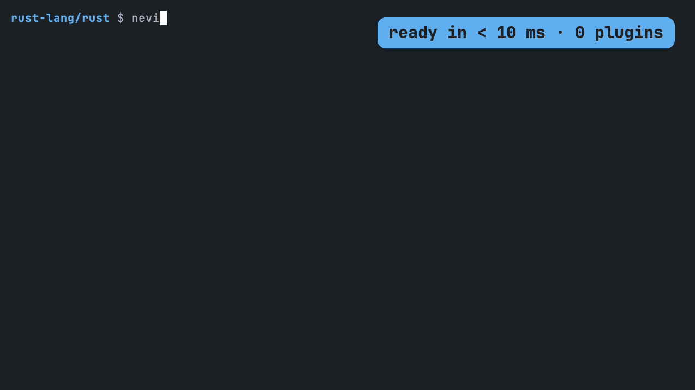

Your Vim muscle memory already works here.
Nevi is a fast, Neovim-inspired terminal editor written in Rust. LSP, tree-sitter, fuzzy finding, and git are built into the binary, so there is no plugin list to assemble before you can work.
372 keybinds implemented. 206 of them verified against real Neovim on every CI run.
brew install anthonyamaro15/nevi/nevi

Why Nevi
Zed is fast and modern, but its vim mode is incomplete. Neovim is powerful, but it gets slow once the plugin list grows. Helix asks you to relearn Kakoune-style keys.
Nevi is a native terminal editor where the keys you already know just work, and the tools you would normally install as plugins ship in the binary.
| Editor | Vim keybinds | Built-in features | Notes |
|---|---|---|---|
| Neovim | Full | Via plugins | Powerful but plugin-dependent |
| Zed | Partial | Yes | Fast but vim mode incomplete |
| Helix | Kakoune-style | Yes | Different keybind philosophy |
| Nevi | 372 and counting | Yes | Test-backed vim compatibility |
Speed is measured, release to release
- Live grep, first result for a rare query
- 33 mswas 5.33 s in 0.3.0
- Editor frozen while the file picker opens
- 15 µswas 407 ms
- Reparse after an edit, 18,060-line Rust file
- 3.4 mswas 27 ms
Nevi 0.4.0 on an Apple M4 laptop, release builds, median of several runs. Live grep searches a generated repo of about 43,000 files and is timed from when the search starts, after the picker's 150 ms typing delay. Every number comes from a benchmark in the repository: see the performance table.
What is in the binary
-
Vim and Neovim keybindings
Surround, comment, text objects, dot repeat, macros, and registers that survive restarts.
ys cs ds gcc . q{a-z}
-
Built-in LSP
14 languages, auto-detected on your PATH, with install hints when a server is missing.
gd gr K ]d <Space>ca <Space>rn
-
Tree-sitter highlighting
15 languages, with a large-file degradation mode so huge files stay usable.
]m [m
-
Telescope-style finder
Files, live grep, buffers, diagnostics, git changes, themes, and keymaps. No ripgrep or fzf needed.
<Space>ff <Space>fg <Space>fb <Space>fk
-
File explorer
Git status tints and diagnostic badges next to every file.
<Space>e
-
Terminal, git, and Copilot
Floating terminal sessions, lazygit, GitHub Copilot ghost text, Markdown preview, and previewed project-wide replace.
<Space>tt <Space>gg :MarkdownPreview
-
Start screen
Recent files open with a digit, harpoon pins with h and a digit.
1-9 h1-h9 <Space>m <Space>h
-
Simple TOML config
One file at
~/.config/nevi/config.toml, created with a commented template on first run. Nevi never rewrites a config file you own.:config :checkhealth
Compatibility you can check
372 keybinds implemented
206 verified against real Neovim on every CI run
Nevi backs its Vim compatibility with tests instead of adjectives. A Vim oracle replays the same keys in Nevi and in a headless Neovim, then compares the results.
- Each case is an initial buffer plus a literal key sequence.
- The keys are replayed in Nevi and in
nvim --headless. - Buffer content, cursor position, viewport top, and mode must match. CI runs this against a pinned Neovim v0.11.3 on macOS and Linux.
Found a key that behaves differently from Neovim? Open a Vim parity report and it becomes a test case.
A few of the keys checked against Neovim
- ciw
- ci"
- dit
- dip
- cW
- dgg
- yG
- gJ
- "_
- "0
- q{a-z}
- @@
- <C-v>
- gv
- gn
- g&
- .
- %
- ]p
- gi
- zz
- <C-o>
- *
- <C-a>
- R
- g~~
- '^
- ]]
The parity scoreboard is generated from the same inventories the test suite enforces, so it cannot drift from what is actually verified.
17 themes, bundled
Pick one below and this page switches to it. In Nevi, <Space>ft opens the same choice as a live picker.
1// Drop a .toml file into
2// ~/.config/nevi/themes/ and
3// its filename is the theme name.
4fn main() {
5 let bundled: u8 = 17;
6 println!("{bundled} themes");
7}:theme onedark
Languages
Servers are detected on your PATH. :ToolInstall prints the exact install command for anything missing, and :checkhealth shows what was found.
- Rustrust-analyzer
- TypeScript / JavaScripttypescript-language-server
- Pythonpyright
- Gogopls
- Rubyruby-lsp
- PHPphpactor
- CSS / SCSSvscode-css-language-server
- JSONvscode-json-language-server
- HTMLvscode-html-language-server
- TOMLtaplo
- Shell / Bashbash-language-server
- Swiftsourcekit-lsp
- Markdownmarksman (off by default)
- Typsttinymist
Every language above has syntax highlighting. External formatters such as biome, prettier, black, and gofmt are set in languages.toml; formatting falls back to the LSP otherwise. Missing a language? Open an issue.
Install
Homebrew macOS
brew install anthonyamaro15/nevi/nevi Cargo macOS and Linux
cargo install --git https://github.com/anthonyamaro15/nevi From source
git clone https://github.com/anthonyamaro15/nevi.git && cd nevi
cargo build --release
cp target/release/nevi ~/.local/bin/ Linux build dependencies
Debian / Ubuntusudo apt update && sudo apt install -y build-essential cmake pkg-config libssl-dev zlib1g-dev libx11-dev libxcb1-dev libxcb-render0-dev libxcb-shape0-dev libxcb-xfixes0-devFedorasudo dnf install -y gcc gcc-c++ make cmake pkgconf-pkg-config openssl-devel zlib-ng-compat-devel libX11-devel libxcb-develArchsudo pacman -S --needed base-devel cmake pkgconf openssl zlib libx11 libxcbBuilding needs Rust 1.85 or newer. Nothing else is required at runtime: the file finder, live grep, fuzzy matching, and syntax highlighting are built in, so ripgrep, fzf, fd, and the tree-sitter CLI are not needed. Language servers and lazygit are optional.
Then
- nevi .
- Open a directory
- nevi src/main.rs
- Open a file
- nevi diff before.rs after.rs
- Side-by-side diff
:w, :q, and :wq do exactly what they do in Vim. Press <Space> on its own to see every leader shortcut.